Desde 22 de janeiro de 2026 respondo pelas miniaturas, títulos e SEO de descrição de um canal de luthieria com mais de 100 mil inscritos. Este documento reúne o que consigo demonstrar com dados do YouTube Studio — organizado da evidência mais forte para a mais fraca, e dizendo também o que ela não prova.
Antes dos números
Sem eu pedir, ele gravou um vídeo de quase três minutos no Instagram e publicou na comunidade do YouTube explicando o que mudou no canal e indicando meu contato.
A parte visual do canal — thumbnails, descrições, títulos e capa — passou por mudanças que refletiram diretamente nos números, de forma totalmente orgânica, usando as próprias ferramentas do YouTube. Alexandre Cesar Luthier · julho de 2026
Basta olharem os números do canal. É notório o desempenho. Alexandre Cesar Luthier · julho de 2026
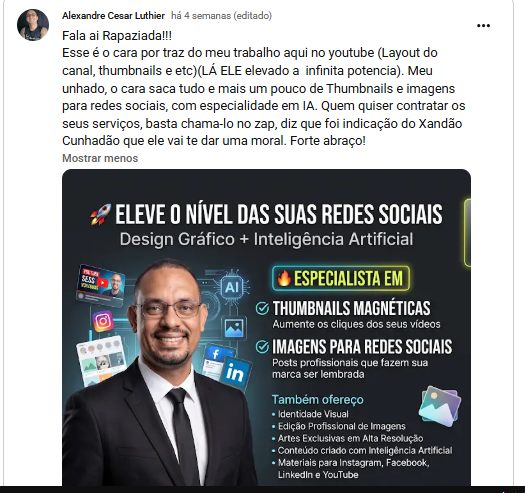
Alexandre é meu cunhado, e ele diz isso no próprio vídeo. A relação abriu a porta — os resultados abaixo vieram do trabalho e podem ser conferidos ao vivo no YouTube Studio, em reunião. As três primeiras miniaturas foram feitas por iniciativa própria, sem cobrança, antes de qualquer combinação de trabalho.
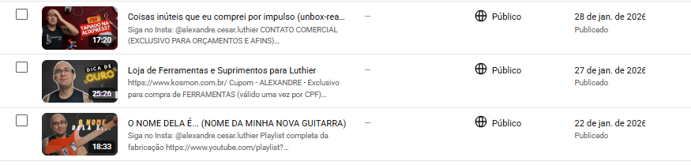
O que eu faço nesse canal
De 9 a 10 propostas por vídeo, incluindo refação de capas do acervo.
De 6 a 7 propostas por vídeo, escritas para entrar em teste junto com as capas.
Reescrita completa das descrições. Esta etapa é integralmente minha.
Não atuo em roteiro, gravação, edição ou publicação. Todo o crescimento apresentado aqui é orgânico — o canal não investiu em mídia paga no período.
Processo
Produzo de 9 a 10 miniaturas e 6 a 7 títulos por vídeo. O especialista do canal seleciona três de cada — ele é quem enxerga um detalhe técnico errado num headstock ou uma palavra que não combina com a voz da marca. As três variações entram no teste A/B/C do YouTube, e a plataforma decide qual fica publicada.
O YouTube escolhe a capa que trouxe quem assistiu mais, não a mais clicada. Capa sensacionalista costuma vencer no clique e perder aqui. Por isso o resultado do teste vale mais que a minha opinião — ou a do cliente.
Não sou luthier. O conhecimento técnico do canal entra na seleção, antes da publicação, e não depois do erro no ar. É o mesmo processo que aplico em qualquer nicho técnico.
Quando a diferença é estatisticamente confiável, o YouTube aponta a vencedora.
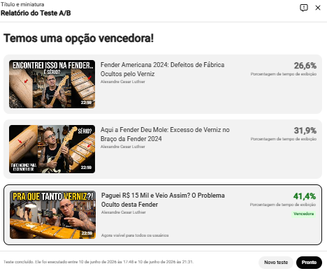
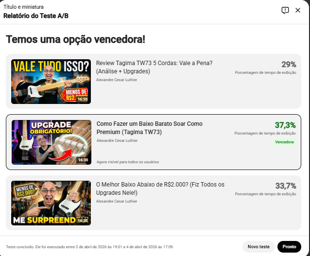
Quando a diferença fica dentro da margem de ruído, a plataforma não declara vencedora — e isso também é informação útil.
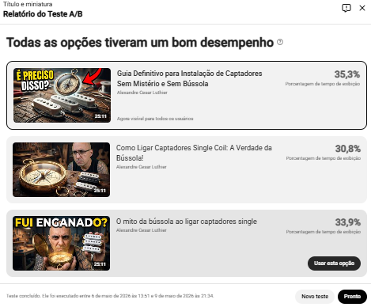
Mostro os dois tipos de resultado de propósito. Um portfólio que só exibe vitórias esconde a taxa de acerto — e a taxa de acerto é o que separa quem testa de quem escolhe pelo gosto.
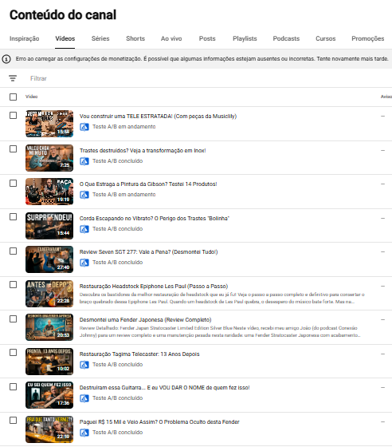
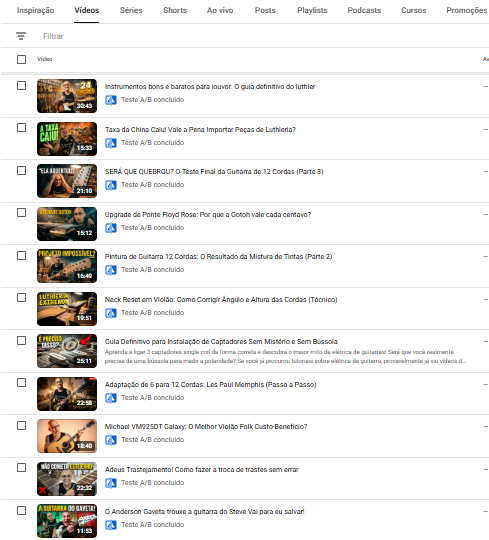
Nota: vídeos com descrição longa não exibem o selo na listagem, então o número real é maior que o visível nestas capturas.
Prova por vídeo — a evidência mais limpa deste material
Vídeo publicado em maio de 2024. Em 7 de maio de 2026 recebeu nova miniatura e nova descrição. Comparando 44 dias antes com 44 dias depois, sem alterar mais nada no vídeo:
| Métrica | 24/mar – 6/mai | 8/mai – 20/jun |
|---|---|---|
| Duração média da visualização | 6:14 | 7:21 |
| Porcentagem visualizada | 28,8% | 34,0% |
| Visualizações | 1.529 | 1.536 |
| Impressões | 19.173 | 17.183 |
| Taxa de cliques | 5,7% | 5,8% |
O ponto não é o clique — ele ficou estável. O ponto é que o vídeo recebeu cerca de 10% menos impressões e ainda assim manteve o mesmo número de visualizações, com cada pessoa assistindo 18% mais tempo.
A leitura: a nova capa e a nova descrição não trocaram retenção por clique. Com menos exibição, o vídeo passou a atrair quem realmente assiste.
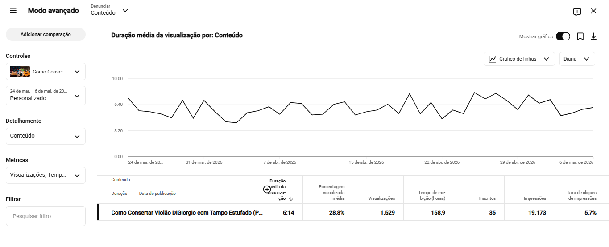
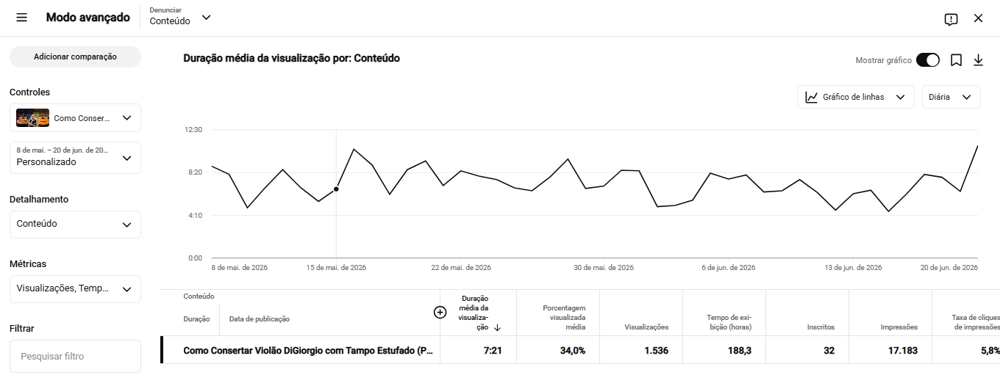
Capa e descrição foram alteradas no mesmo dia, então o efeito não pode ser atribuído isoladamente a uma delas. A descrição pesa especialmente neste vídeo: ele é forte em pesquisa, onde registra taxa de cliques de 12,2% — o dobro da média do canal.
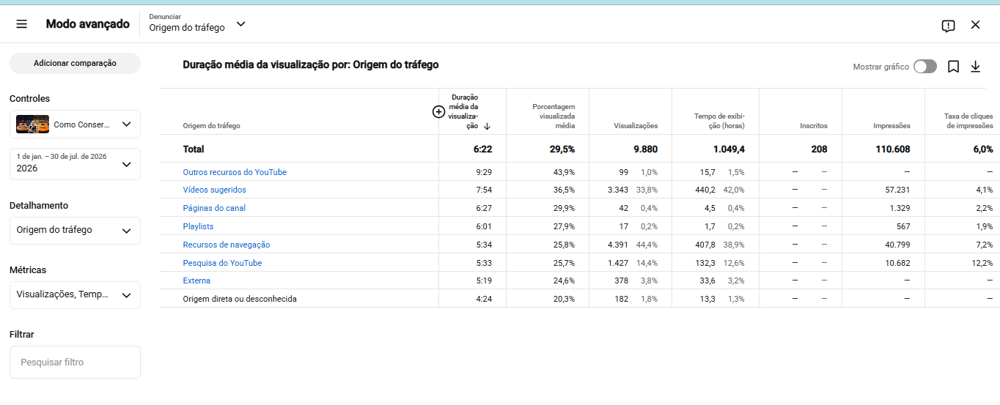
No acumulado de 2026, este vídeo de 2024 gerou 208 novos inscritos — 4,1% de todos os inscritos do canal no período, a maior contribuição individual da lista.
Reativação de acervo
Além dos lançamentos, refiz miniatura e descrição de vídeos já publicados. O caso da seção anterior é um deles — um vídeo de 2024 que voltou a ser o maior gerador de inscritos do canal dois anos depois.
Para um canal com acervo grande e parado, este é o trabalho de retorno mais rápido: não exige gravar nada novo, e o efeito aparece em poucas semanas.
Escala
Entre os dez vídeos que mais geraram impressões no canal nesse recorte, nove têm miniatura feita por mim. O único que não tem é um vídeo de 2018.
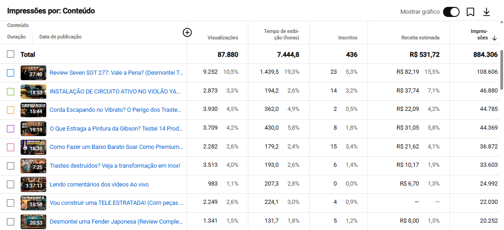
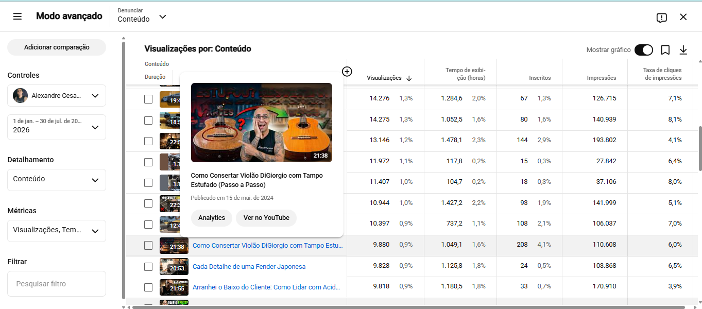
Impressão é quando a capa do vídeo aparece na tela de alguém — é a etapa que a miniatura disputa. Visualização depende também do título, do tema e do histórico do espectador. Por isso os dois números não devem ser divididos um pelo outro.
Contexto do canal — indicativo, não atribuível a uma pessoa
| Métrica | 2025 · 12 meses | 2026 · 7 meses |
|---|---|---|
| Duração média da visualização | 5:32 | 5:58 |
| Taxa de cliques | 5,4% | 5,3% |
| Impressões | 10,3 mi | 6,9 mi |
| Visualizações | 836,5 mil | 558,3 mil |
A duração média subiu 8% e o volume de impressões corre em ritmo maior. A taxa de cliques agregada permaneceu estável — e está aqui exatamente por isso: números de canal são a média de centenas de vídeos, a maioria com capa anterior ao meu trabalho. Por isso a evidência principal deste material é por vídeo, não agregada.
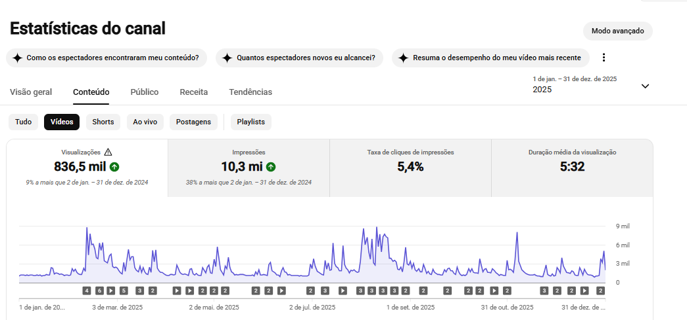
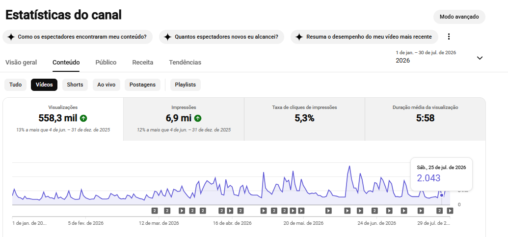
Origem das visualizações · últimos 28 dias
Página inicial e vídeos sugeridos somam cerca de 59% das visualizações. São as duas telas em que o espectador vê uma grade de miniaturas e escolhe uma. O feed dos Shorts, onde não existe capa, responde por 12,6% — e 70% dos espectadores recorrentes assistem apenas aos vídeos longos.
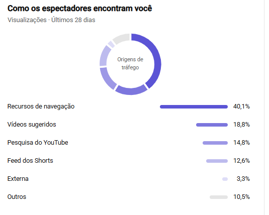
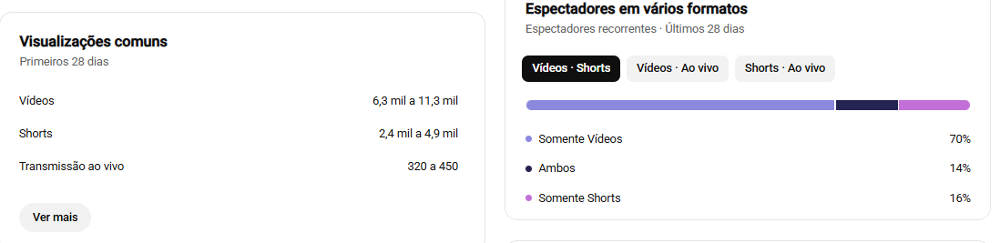
Como ler este material
O que eu afirmo é mais simples: existe um processo — produzir volume, filtrar com quem entende do assunto, testar e ler o resultado. E quando a única coisa alterada foi a capa e a descrição, o comportamento da audiência mudou de forma mensurável. Tudo isso está registrado no painel da própria plataforma e disponível para conferência ao vivo.
Próximo passo
Analiso suas miniaturas, títulos e origens de tráfego, aponto onde está o gargalo e entrego um plano de 30 dias. Sem contrato mensal para começar.